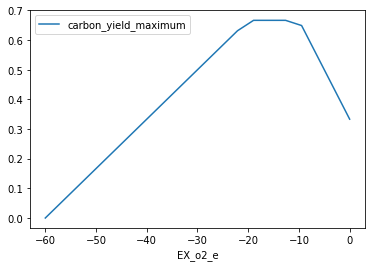

7. 产物膜 (?)¶
产物膜 (又被称为表型相平面 (phenotype phase planes)) 会显示 最优生长的不同阶段 对两种不同基质 (substrates) 的不同使用. 更多信息, 请看 Edwards et al.
Cobrapy 支持计算这些产物膜 (production envelopes) 并且它们可以用你喜欢的绘图包轻松绘制. 这里, 我们会为 “教科书” 大肠杆菌 核心模型做一个 并且使用 matplotlib 演示绘图.
[1]:
import cobra.test
from cobra.flux_analysis import production_envelope
model = cobra.test.create_test_model("textbook")
我们想要做一个表型相平面来估计对葡萄糖和氧气的使用.
[2]:
prod_env = production_envelope(model, ["EX_glc__D_e", "EX_o2_e"])
[3]:
prod_env.head()
[3]:
| carbon_source | carbon_yield_maximum | carbon_yield_minimum | flux_maximum | flux_minimum | mass_yield_maximum | mass_yield_minimum | EX_glc__D_e | EX_o2_e | |
|---|---|---|---|---|---|---|---|---|---|
| 0 | EX_glc__D_e | 1.442300e-13 | 0.0 | 0.000000 | 0.0 | NaN | NaN | -10.0 | -60.000000 |
| 1 | EX_glc__D_e | 1.310050e+00 | 0.0 | 0.072244 | 0.0 | NaN | NaN | -10.0 | -56.842105 |
| 2 | EX_glc__D_e | 2.620100e+00 | 0.0 | 0.144488 | 0.0 | NaN | NaN | -10.0 | -53.684211 |
| 3 | EX_glc__D_e | 3.930150e+00 | 0.0 | 0.216732 | 0.0 | NaN | NaN | -10.0 | -50.526316 |
| 4 | EX_glc__D_e | 5.240200e+00 | 0.0 | 0.288975 | 0.0 | NaN | NaN | -10.0 | -47.368421 |
如果我们指定碳源, 我们也可以得到碳和质量产出. 比如说, 临时设置产出醋酸盐 (acetate) 目标，我们可以得到以下产物膜和 pandas 来快速绘制结果.
[4]:
prod_env = production_envelope(
model, ["EX_o2_e"], objective="EX_ac_e", carbon_sources="EX_glc__D_e")
[5]:
prod_env.head()
[5]:
| carbon_source | carbon_yield_maximum | carbon_yield_minimum | flux_maximum | flux_minimum | mass_yield_maximum | mass_yield_minimum | EX_o2_e | |
|---|---|---|---|---|---|---|---|---|
| 0 | EX_glc__D_e | 2.385536e-15 | 0.0 | 0.000000 | 0.0 | 2.345496e-15 | 0.0 | -60.000000 |
| 1 | EX_glc__D_e | 5.263158e-02 | 0.0 | 1.578947 | 0.0 | 5.174819e-02 | 0.0 | -56.842105 |
| 2 | EX_glc__D_e | 1.052632e-01 | 0.0 | 3.157895 | 0.0 | 1.034964e-01 | 0.0 | -53.684211 |
| 3 | EX_glc__D_e | 1.578947e-01 | 0.0 | 4.736842 | 0.0 | 1.552446e-01 | 0.0 | -50.526316 |
| 4 | EX_glc__D_e | 2.105263e-01 | 0.0 | 6.315789 | 0.0 | 2.069927e-01 | 0.0 | -47.368421 |
[6]:
%matplotlib inline
[7]:
prod_env.plot(
kind='line', x='EX_o2_e', y='carbon_yield_maximum');

cobrapy 的早期版本为相平面包含了制定化的绘图功能，但现在为了提高可维护性，更加专注 cobrapy 本身的功能，已经被抛弃. 为 cobra 模型绘图的功能交由其他包来完成.